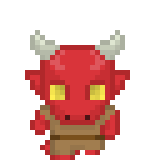

- Depois da Guerra, o tipo dos Kobolds mudou para Dragão, eles perdem a penalidade em CON e a sensibilidade a luz, fora isso, se mantém como o Kobold padrão
Kobolds, são os principais habitantes das Cordilheiras Vermelhas

Antigamente, os Draconatos eram criados por meio de um ritual, mas hoje são uma espécie, são a Raça dominante em Kaareth
- Atributos: varia conforme a Herança
- Tipo: Dragão
- Tamanho: Medium
- Movimento: 9m
- Armadura Natural: +2
- Ataques Naturais: garras e mordida de 1d4, armas primárias
- Qualidades Especiais:
- Sopro: a partir do segundo nível, pode usar uma arma de sopro que causa 1d6 de dano a cada 3 níveis, ela pode ser usada uma quantidade de vezes por dia igual ao modificador de CON e a CD do teste de reflexos é baseada em CON
- Herança:
- Dragão Negro: +2 CON, +2 WIS, -2 CHA, o Sopro é uma linha de Ácido de 9m
- Dragão Azul: +2 DEX, -2 CON, +2WIS, o Sopro é uma linha de Eletricidade de 9m
- Dragão Verde: -2 DEX, +2 CON, +2 INT, o Sopre é um cone de Gás Ácido de 6m
- Dragão Vermelho: +2 STR, -2 DEX, +2 CON, o Sopro é um cone de Fogo de 6m
- Dragão Branco: +2 STR, +2 DEX, -2 INT, o Sopro é um cone de Gelo de 6m
- Dragão de Latão: -2 DEX, +2 CON, +2 CHA, o Sopro é uma linha de Fogo de 9m
- Dragão de Bronze: +2 DEX, +2 WIS, -2 CHA, o Sopro é um Cone de Eletricidade de 6m
- Dragão de Cobre: +2 STR, -2 DEX, +2 WIS, o Sopro é uma linha de Ácido de 9m
- Dragão de Prata: -2 DEX, +2 CON, +2 INT, o Sopro é um Cone de Frio de 6m
- Dragão de Ouro: -2 DEX, +2 CON, +2 WIS, o Sopro é um Cone de Fogo de 6m
Os Herdeiros Cromáticos tem a habilidade Toque da Rainha Tirana, eles recebem +2 de bônus nos testes de Intimidate
Os Herdeiros Metálicos possuem a habilidade Toque do Rei Piedoso, eles recebem +2 em testes de Diplomacy
Em Construção